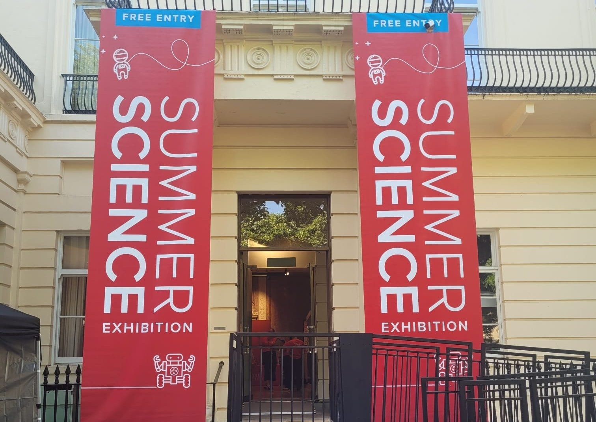
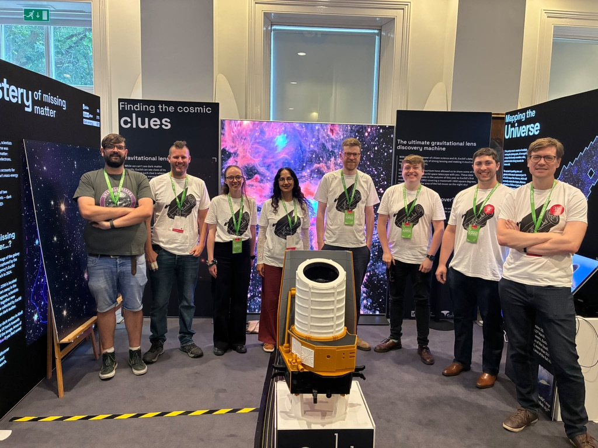

Public Engagement
Euclid stars at Royal Society Summer Science Exhibition
More than 10,000 visitors encountered Euclid’s search for the dark Universe at the Royal Society’s Summer Science Exhibition, meeting the scientists, engineers and public engagement specialists behind the mission.
Held from 30 June to 5 July 2026, the free exhibition brought research teams from across the UK together to share their work through demonstrations, activities and conversations. Euclid was selected to feature among the projects presented at the Royal Society’s annual event.
The University of Edinburgh led the exhibit with the University of Sussex and The Open University. Their display, Euclid: The Dark Universe Detective, introduced the European Space Agency’s telescope and the questions it is investigating about dark matter and dark energy. These unseen components influence how galaxies form and how the Universe expands. Euclid’s detailed sky maps will help researchers investigate their effects.
Visitors could explore both the visible Universe and the matter that cannot be seen directly. Interactive activities invited them to hunt for dark matter, discover how massive objects bend space-time, and search for gravitational lenses: distant objects whose light is distorted by matter between them and Earth. They could also zoom into Euclid’s images and try their hand at citizen science.
Talks and performances offered other ways into the science. Professor Andy Taylor of the University of Edinburgh joined Dr Will Coulton for Cosmic Detectives, a conversation chaired by Professor Lucie Green. Taylor leads the UK’s Euclid data analysis team and the mission’s gravitational lensing analysis. Charlie Wood also presented a drag interpretation of the mission during A queer tour of the Summer Science Exhibition.
The team brought together people at many stages of their careers, including science communication master’s students, PhD researchers, postdoctoral researchers and professors. Their collaboration extended across universities, science centres and cultural organisations, showing how different skills contribute to sharing a space mission with the public.

“I’m looking forward to seeing how our attendance at Summer Science can be the catalyst that extends our reach even further.”
Euclid: The Dark Universe Detective will tour flagship events and science festivals in the coming months ahead of the space telescope’s first data release in the autumn and some exciting cosmological results which are expected next summer. Learn more in the link below, which also contains an online exhibition.